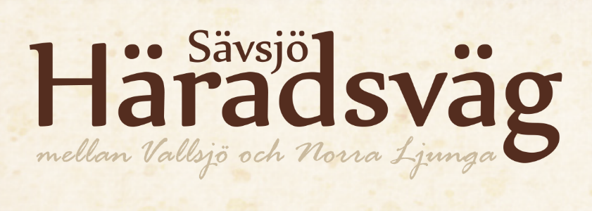
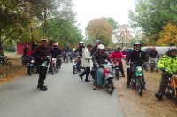
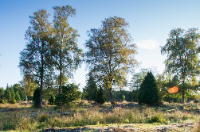

Närheten till Sävsjö och det vackra läget intill Vallsjön med bad och friluftsliv, har gjort att Torset och byarna runt omkring är attraktiva platser att bo på. Vid Vallsjön finns ett stort sommarstugeområde och flera sommarstugor är idag ombyggda till helårsboende.
I bygden har också funnits verksamheter av olika slag. Allt från remskivefabrik, cementfabrik, möbeltillverkning, torvströfabrik, sågverksrörelse, stenkrossanläggning, pälsdjursuppfödning till hönseri. Mycket av det som tillverkades fraktades på järnvägen till Sävsjö för omlastning och vidare transport och även export.
Mitt i Torset ligger den gamla skolan som är byns samlingsplats och som idag ägs av Torsets byalag.
Strax intill Torset ligger Hallstenstorp. Där finns ett Natura 2000 område som ingår i EUs nätverk av värdefulla naturområden.